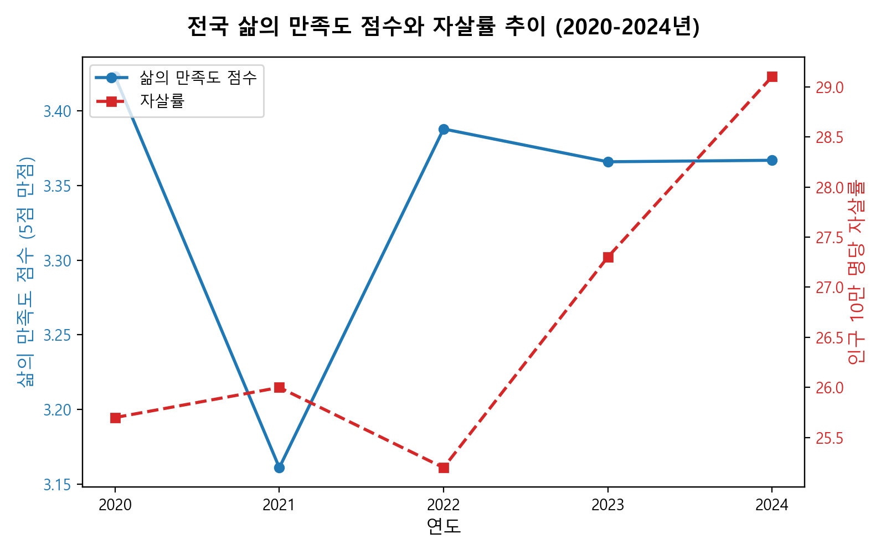
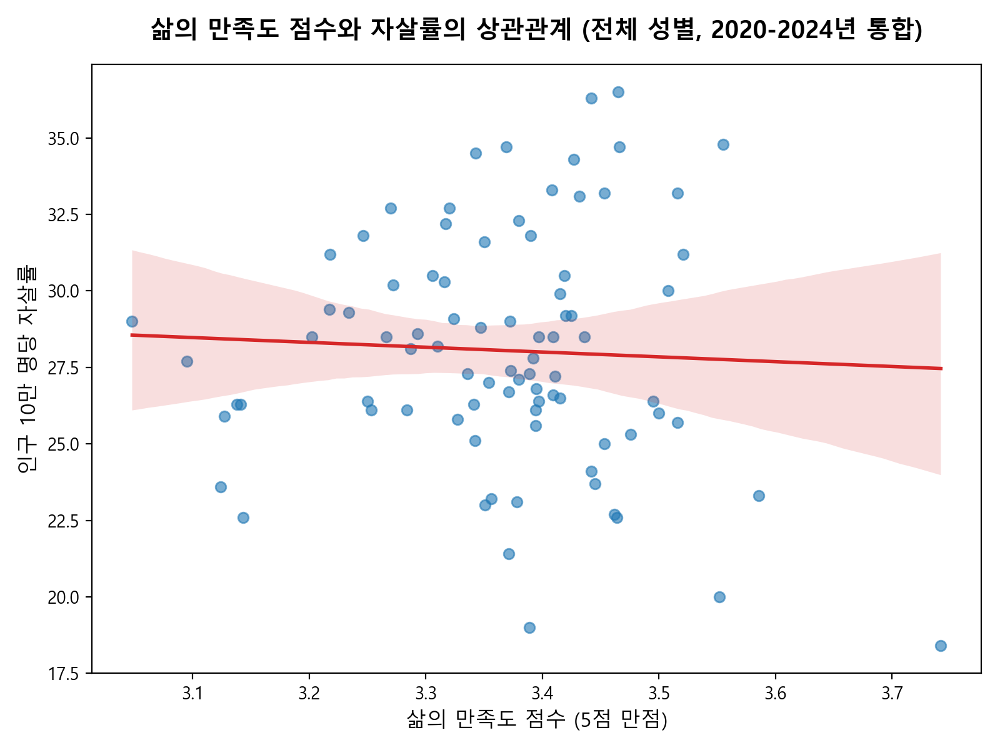
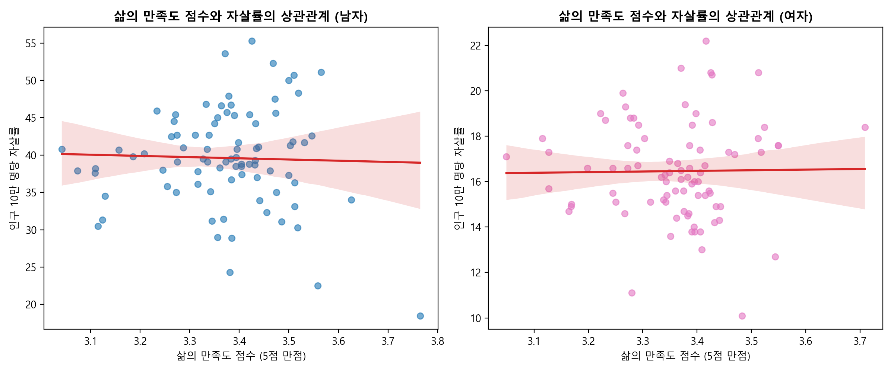
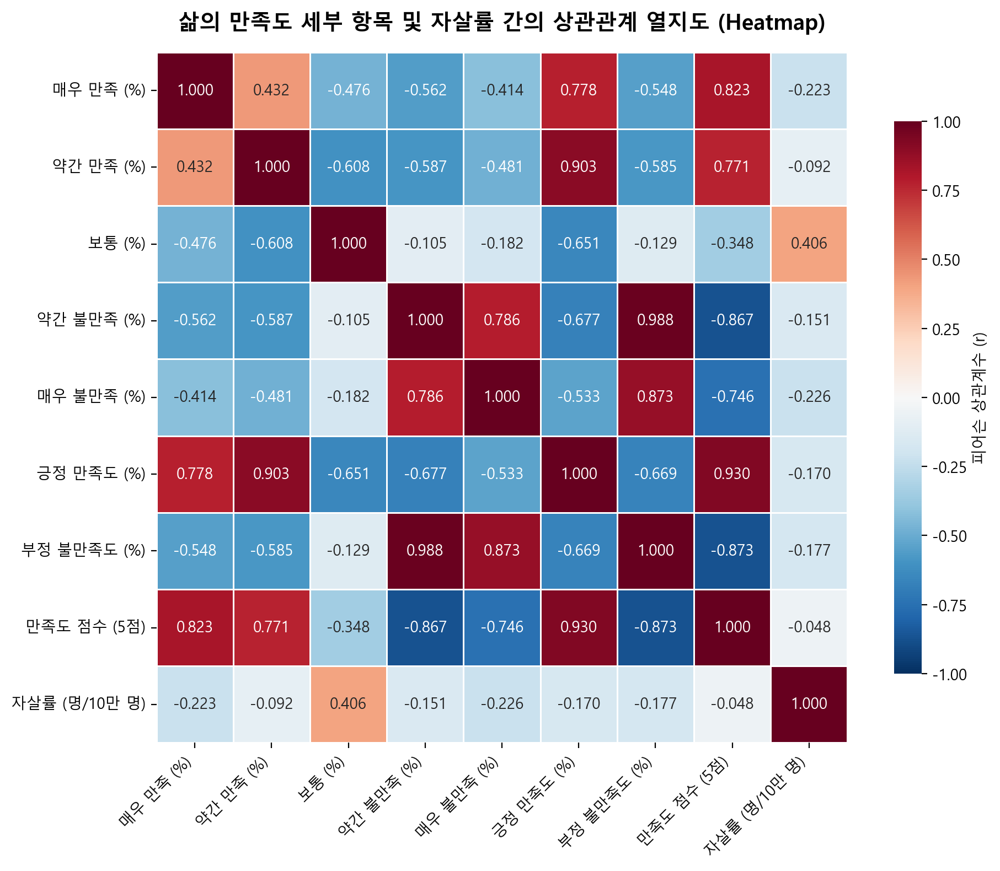
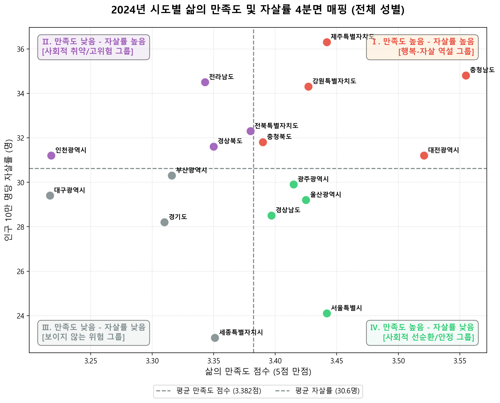

대한민국 17개 시도의 주관적 삶의 만족도 지표(사회조사)와 객관적 건강 지표인 자살률(사망원인통계)의 통계적 및 공간적 연관성 규명
코로나19 팬데믹의 여파 (2021년)
2020년 3.423점 수준이던 국민들의 주관적 삶의 만족도 점수는 팬데믹이 정점에 달한 2021년 3.161점으로 큰 폭으로 하락했습니다. 이는 장기간의 사회적 거리두기와 일상 제약이 대중의 심리적 건강에 미친 심각한 영향을 고스란히 보여줍니다.
주관적 안녕감의 반동과 자살률의 괴리 (2023~2024년)
2022년 이후 삶의 만족도 점수는 3.36~3.38점으로 반등하며 팬데믹 이전 수준을 대부분 회복하는 모습을 보였습니다. 그러나 자살률은 2022년 25.2명에서 2024년 29.1명으로 오히려 계속 상승하여 최고점을 경신하는 역설적인 상황이 전개되었습니다.


17개 시도의 5개년 데이터(총 85개 관측치, 전국 제외)를 통합하여 도출한 선형 회귀 결과, 두 지표 간의 피어슨 상관계수($r$)는 -0.0477 ($p$-value: 0.6649)로 분석되었습니다.

남성 ($r = -0.0313$, $p = 0.7765$) / 여성 ($r = 0.0141$, $p = 0.8980$)
남녀 그룹 모두 주관적 삶의 만족도 점수와 자살률 사이에 뚜렷한 유의미한 선형 상관성을 나타내지 않았습니다. 그러나 자살률의 절대량 자체는 남성(2024년 41.8명)이 여성(16.6명)보다 약 2.5배 높음을 확인할 수 있습니다.

'보통(Neutral)' 응답 비율과 자살률의 강한 정(+)의 상관성 ($r = 0.406$)
분석에서 도출된 가장 중요한 발견 중 하나는 **"보통"이라고 응답한 사람의 비율이 높은 지역일수록 자살률이 매우 뚜렷하게 상승**한다는 사실입니다.
'매우 만족'($r = -0.223$)과 '매우 불만족'($r = -0.226$)의 역설
불만족을 강하게 표현하는 비율("매우 불만족")이 높은 지역은 오히려 자살률과 음의 상관성을 띱니다. 이는 불만족을 강하게 분출하는 것 또한 삶을 개선하고자 하는 일종의 에너지 작용인 반면, "보통"이라는 중립적 응답 뒤에 숨은 심각한 정서적 체념과 고립(Apathy)이야말로 자살 위험을 심화시키는 주 요인임을 보여줍니다.
2024년 전국 17개 시도의 평균 삶의 만족도 점수(3.385점)와 평균 자살률(31.4명)을 각각 축으로 나누어 분석한 결과, 각 시도는 4개의 뚜렷한 거동 그룹으로 분류되었습니다.

| 행정구역 | 만족도 가중 점수 (5점) | 긍정 만족도 (%) | 부정 불만족도 (%) | 자살률 (명/10만 명) | 분류 유형 |
|---|---|---|---|---|---|
| 세종특별자치시 | 3.351 | 42.8% | 9.9% | 23.0 | Ⅳ. 선순환 안정 |
| 서울특별시 | 3.442 | 46.3% | 11.9% | 24.1 | Ⅳ. 선순환 안정 |
| 경기도 | 3.310 | 35.7% | 12.7% | 28.2 | Ⅲ. 보이지 않는 위험 |
| 대구광역시 | 3.217 | 36.1% | 21.9% | 29.4 | Ⅲ. 보이지 않는 위험 |
| 부산광역시 | 3.316 | 37.5% | 15.0% | 30.3 | Ⅲ. 보이지 않는 위험 |
| 인천광역시 | 3.218 | 28.0% | 13.8% | 31.2 | Ⅱ. 사회적 고위험 |
| 전라남도 | 3.343 | 40.2% | 15.4% | 34.5 | Ⅱ. 사회적 고위험 |
| 충청남도 | 3.555 | 47.0% | 11.9% | 34.8 | Ⅰ. 행복-자살 역설 |
| 제주특별자치도 | 3.442 | 43.4% | 10.1% | 36.3 | Ⅰ. 행복-자살 역설 |